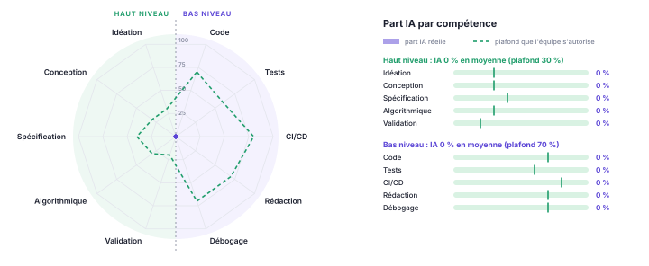

Dossier de lancement — M1 MIAGE Apprentissage — v0.1.0-SNAPSHOT
20 octobre 2026
| Membre | Compte GitHub | Email des commits (git config user.email) |
|---|---|---|
| Yasmine HADDAG | @yasminehdg |
email(haddagyasmine9@gmail.com) |
| Melissa AKLI | @Melissa-akli25 |
email(melissa.akli2025@gmail.com) |
| Kenza CHAHNAZ | @0Kenza0 |
email(kenzachahnaz@outlook.fr) |
| Daniel BADOYAN | @DanielBadoyan |
email(43003965@parisnanterre.fr) |
| Hélios LOTT | @helioslt |
email(helioslott@gmail.com) |
Chaque membre a vérifié que son email Git est associé à son compte GitHub, pour que ses commits lui soient bien attribués. Dépôt : https://github.com/Melissa-akli25/Projet-PRJ · page de projet : à compléter.
Faire ses courses en respectant son budget n’est pas toujours facile. Les prix varient d’un magasin à l’autre et il est parfois difficile de savoir où acheter ses produits au meilleur prix. De plus, choisir le magasin le moins cher n’est pas forcément la meilleure solution si celui-ci est trop éloigné et que le déplacement coûte plus cher que les économies réalisées.
SmartCourses a pour objectif d’aider les utilisateurs à mieux organiser leurs courses et à réduire leurs dépenses. L’application permet de créer une liste de courses, de rechercher des produits, de comparer les prix entre différents magasins et de constituer un panier adapté à son budget. Elle peut également proposer des produits alternatifs moins chers et prendre en compte la distance entre les magasins pour aider l’utilisateur à faire le meilleur choix.
L’optimisation plutôt que la simple comparaison. SmartCourses ne se contente pas d’afficher les prix des produits. L’application cherche à proposer les solutions les plus avantageuses en tenant compte du budget de l’utilisateur et de ses besoins.
La prise en compte du coût du déplacement. Le magasin qui propose les prix les plus bas n’est pas toujours le plus intéressant. SmartCourses compare les économies possibles avec la distance à parcourir afin d’aider l’utilisateur à déterminer si le déplacement vaut réellement le coup.
Des alternatives adaptées au budget. Lorsqu’un produit est trop cher ou indisponible, l’application peut proposer des produits similaires moins chers. L’utilisateur peut ainsi réduire ses dépenses sans devoir renoncer systématiquement aux produits qu’il souhaite acheter.
Les applications de courses peuvent permettre de rechercher des produits, de préparer des listes ou de consulter des prix. SmartCourses souhaite aller plus loin en combinant plusieurs critères pour aider l’utilisateur à prendre ses décisions.
L’objectif n’est donc pas seulement de trouver le produit le moins cher, mais de déterminer la solution la plus avantageuse pour l’ensemble des courses, en tenant compte du budget, des prix et des déplacements.
En tant qu’utilisateur, je renseigne mon profil (foyer, budget, régime, placards, équipement), afin que le moteur d’optimisation génère un panier adapté à ma situation.
Préconditions
Postconditions
Scénario nominal
Scénario alternatif
En tant qu’utilisateur, je donne ma liste de courses et mon budget maximum, afin d’obtenir un panier qui respecte ce budget grâce à des alternatives moins chères.
Préconditions
Scénario nominal
Scénario alternatif
Une feature a un effet sur la BD, le back, l’API REST et le front. Chaque feature est portée par une seule personne et repose sur un algorithme identifié.
| Version | Yasmine | Melissa | Kenza | Daniel | Hélios |
|---|---|---|---|---|---|
| v0.1.0 24/11 | À définir | À définir | À définir | À définir | À définir |
| v0.2.0 08/12 | À définir | À définir | À définir | À définir | À définir |
| v1.0.0 19/01 | À définir | À définir | À définir | À définir | À définir |
Front --HTTP/JSON--> API REST --> Back (cas d'utilisation) --JPA--> BD
(React) (Spring Web) (Java, Spring Boot) (MySQL)Le front transmet les demandes à l’API REST. Le back exécute les règles métier et les algorithmes (optimisation du panier, équilibrage nutritionnel, substitution de produits), accède à la base de données, puis renvoie les résultats au front au format JSON. L’API REST est intégrée à l’application Spring Boot.
| Couche | Choix | Remarques |
|---|---|---|
| Front | React, JavaScript, HTML/CSS | saisie du budget et des préférences alimentaires, consultation des
paniers proposés ; client de l’API REST uniquement ; dossier
front/ |
| API REST | Spring Web (Spring Boot), OpenAPI / Swagger UI | échanges HTTP et JSON ; versionnée sous /api/v1 |
| Back | Java, Spring Boot, Spring Data JPA, Hibernate, Bean Validation | règles métier et algorithmes ; algorithmes en Java pur, indépendants de Spring |
| BD | MySQL (H2 pour les tests) | produits, informations nutritionnelles, prix par magasin, paniers ; schéma versionné par Flyway |
| Qualité | JUnit 5, JaCoCo, SonarCloud | intégration continue GitHub Actions |
| Conteneurs | Docker Compose | BD dès v0.1.0, application en v0.2.0 |
Qualité du code. Au-delà de l’architecture :
Les étapes s’enchaînent dans cet ordre, sans en sauter : on ne commence une étape que lorsque la précédente est terminée.
| Étape | Ce qu’on fait | Terminé quand |
|---|---|---|
| 1. Idéation | Besoin et scénario ; algorithme retenu, complexité,
alternatives ; impact sur le schéma et l’API ; critères d’acceptation.
Issue + fiche doc/features/. |
La fiche est validée par un autre membre. |
| 2. Back | Migration Flyway ; domaine en Java pur (modèle, règles, algorithme) ; application (ports, service) ; adaptateur de persistance. | Le code compile et ArchUnit passe. |
| 3. Tests | Unitaires de l’algorithme (cas limites, invariants, propriétés) ; services avec faux adaptateurs ; intégration de la persistance. | ./gradlew build passe ; chaque critère d’acceptation
est couvert. |
| 4. API REST | Endpoints /api/v1, DTO validés, erreurs
problem+json, OpenAPI ; tests de l’API. |
Visible dans Swagger UI ; tests de l’API verts. |
| 5. Front | Écrans qui consomment uniquement l’API. | Scénario jouable de bout en bout ; PR relue ; fiche complétée avec son araignée. |
Principes fondamentaux à appliquer pendant tout le long de ce projet :
| Activité | Ce que fait l’IA | Ce que fait l’humain |
|---|---|---|
| Recherche du sujet et conception des objectifs du projet | Aide l’humain dans son choix des fonctionnalités à inclure notamment par rapport à la pertinence vis-à-vis des consignes et pour éviter de faire un projet type « interface d’une simple base de données » | Trouver le sujet du projet et réfléchir aux fonctionnalités techniques et algorithmiques qui pourraient inclues |
| Algorithmes | Vérifie le bon fonctionnement du code, elle peut également l’annoter et le rendre plus agréable à la lecture en appliquant les bonnes pratiques d’écriture | Rassemble les attentes de rendu des algorithmes puis les conçoit et les écrit en prenant en compte la complexité |
| Code technique (API, configuration, front) | Peut générer certaines parties notamment les fonctions les plus complexes | Relie chaque ligne générée et compile avant d’adapter le code en fonction des besoins pour répondre au sujet |
| Tests | Suggère les cas de test les plus courants pour ce type de projet | Définit les propriétés, vérifie les tests effectués et adapte les propositions de de l’IA en fonction de l’avancée du projet |
| Débogage et revue | Propose des diagnostics et résout les éventuels bug persistants | Analyse les erreurs et corrige en conséquence |
Afin d’assurer une traçabilité de l’usage de l’IA dans notre projet, les codes en èrement générés seront annotés en conséquence avec la précision des technologies u lisées et le niveau d’u lisa on (l’écriture complète étant le niveau le plus élevé et la simple demande de recommanda ons ou de perspec ves d’améliora on étant plus faible).

Valeurs dans doc/part-ia.json, régénérées à chaque
compilation.